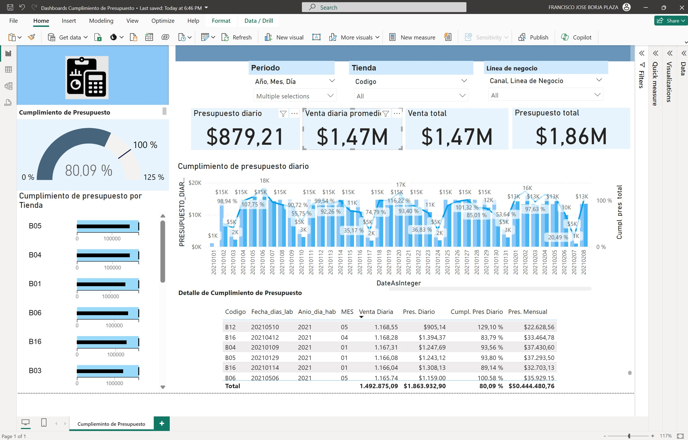

BI Project - Budget Compliance in Power BI
This project involved enhancing the budget compliance reporting capabilities of a company by connecting directly to their ERP system's database. By extracting and consolidating data across various tables, we developed a dynamic Power BI report that offers detailed insights into daily and monthly budget compliance at individual store levels.
Problem Description
The company wanted to clearly understand the daily and monthly performance of sales budget compliance. It had a system that allowed reviewing a budget compliance report; however, this report was not very dynamic as it only allowed using a couple of dimensions for filtering. Moreover, it was very difficult to perform any type of data discovery or understand the details of the information.
Problem Resolution
By connecting directly to the system's database (SAP ERP), we were able to extract and consolidate data from various system tables, which allowed us to obtain a greater number of dimensions for better analysis of the information. The report created in Power BI makes it very simple to view the daily or monthly budget compliance of each store. The report proved to be very useful as it allows reviewing the information at various levels of grouping/aggregation, whether it be days, months, years, stores, store clusters, business lines, etc. This was quite convenient for business managers and much more flexible than the system they previously had.
Tools Involved
- Power BI (DAX and Data Modeling)
- ERP
- SQL
- Pentaho Data Integration